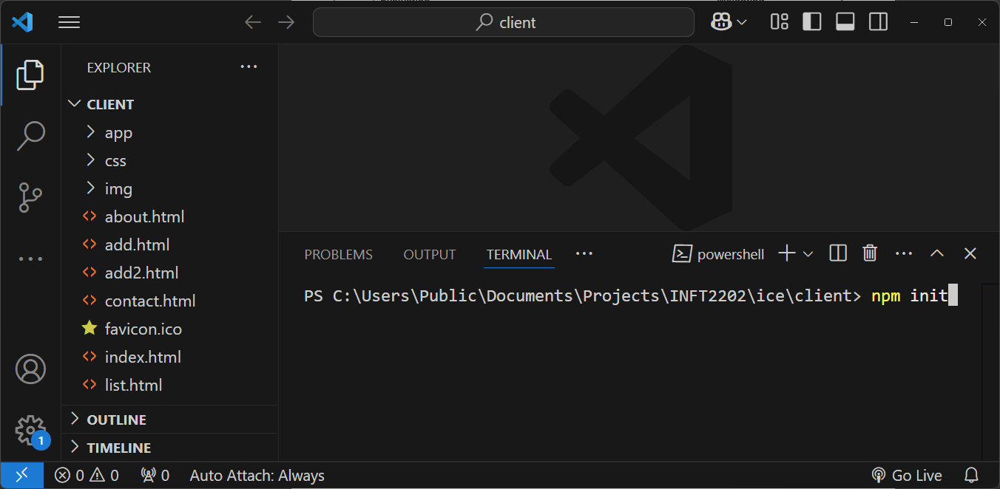

Week 3
ES6
Introduction to ES6ES6 Modules
Differences between ESM / CommonJS Storage ApiNode.js
Introduction to Node.js
Node.js is an open-source and cross-platform JavaScript runtime environment.
Introduction to Package Management via NPM
NPM – or "Node Package Manager" – is the default package manager for JavaScript's runtime Node.js.
Downloading NPM
- launch VS Code, open client folder. 
- npm init
- npm i eslint --save-dev
- package.json
{ "name": "client", "version": "1.0.0", "description": "", "type": "module", "main": "index.js", "scripts": { "test": "echo \"Error: no test specified\" && exit 1", "lint": "eslint \"app/**/*.js\"" }, "author": "", "license": "ISC", "dependencies": { "eslint": "^9.18.0" } } - eslint.config.js
import globals from "globals"; import pluginJs from "@eslint/js"; /** @type {import('eslint').Linter.Config[]} */ export default [ {languageOptions: { globals: globals.browser }}, pluginJs.configs.recommended, ]; - Add node_modules to .gitignore